# install.packages("tidyverse") # Uncomment this line, if needed
library(tidyverse)
# For data cleaning, we want to load the dplyr package
library(dplyr)
# For data visualization, we want to load the ggplot2 package
library(ggplot2)Test / Assessment 2 Review
Since out last assessment, we have started down the path of Elementary Data Analysis. We have worked through the following concepts:
- Measures of Central Tendencies : mean, median
- Measures of Variability : range, variance, standard deviation, 5-number summary, outliers
- Data Visualization : histograms, barplots, boxplots, scatterplots
Setting Up
Load Packages
The first step we want to do is to get our project ready to use. Let’s load up the packages we will need for this review. We will be using the tidyverse package which includes dplyr and ggplot2 for data manipulation and visualization.
Get Data
For this review, we will be using data from the WNBA. This data can be found here :
https://github.com/fivethirtyeight/WNBA-stats/blob/master/wnba-player-stats.csv
- Download the file and save it as “WNBA_Data.csv”
- Create a data directory in your project and save the file there
- Use the
read_csv()command to read the data into R and save it as a variable calledwnba_data
# Load the readr package to read in the data
library(readr)
# Read in the data and save it as a variable called wnba_data
wnba_data <- read_csv("data/WNBA_Data.csv")Next, review the data to see what you can find out about the variables.
# Use the head() command to look at the first few rows of the data
head(wnba_data)# A tibble: 6 × 28
player_ID Player year_ID Age Tm tm_gms Tm_Net_Rtg Pos G MP
<chr> <chr> <dbl> <dbl> <chr> <dbl> <dbl> <chr> <dbl> <dbl>
1 montgre01w Renee Mont… 2019 32 ATL 34 -9.8 G 34 949
2 williel01w Elizabeth … 2019 26 ATL 34 -9.8 C-F 32 909
3 sykesbr01w Brittney S… 2019 25 ATL 34 -9.8 G 34 880
4 hayesti01w Tiffany Ha… 2019 29 ATL 34 -9.8 G 29 817
5 brelaje01w Jessica Br… 2019 31 ATL 34 -9.8 F 33 767
6 bentlal01w Alex Bentl… 2019 28 ATL 34 -9.8 G 29 634
# ℹ 18 more variables: MP_pct <chr>, PER <dbl>, TS_pct <dbl>, ThrPAr <dbl>,
# FTr <dbl>, ORB_pct <dbl>, TRB_pct <dbl>, AST_pct <dbl>, STL_pct <dbl>,
# BLK_pct <dbl>, TOV_pct <dbl>, USG_pct <dbl>, OWS <dbl>, DWS <dbl>,
# WS <dbl>, WS40 <dbl>, Composite_Rating <dbl>, Wins_Generated <dbl># Use the names() command to look at the variable names
names(wnba_data) [1] "player_ID" "Player" "year_ID" "Age"
[5] "Tm" "tm_gms" "Tm_Net_Rtg" "Pos"
[9] "G" "MP" "MP_pct" "PER"
[13] "TS_pct" "ThrPAr" "FTr" "ORB_pct"
[17] "TRB_pct" "AST_pct" "STL_pct" "BLK_pct"
[21] "TOV_pct" "USG_pct" "OWS" "DWS"
[25] "WS" "WS40" "Composite_Rating" "Wins_Generated" # Use the str() command to look at the structure of the data
str(wnba_data)spc_tbl_ [3,883 × 28] (S3: spec_tbl_df/tbl_df/tbl/data.frame)
$ player_ID : chr [1:3883] "montgre01w" "williel01w" "sykesbr01w" "hayesti01w" ...
$ Player : chr [1:3883] "Renee Montgomery" "Elizabeth Williams" "Brittney Sykes" "Tiffany Hayes" ...
$ year_ID : num [1:3883] 2019 2019 2019 2019 2019 ...
$ Age : num [1:3883] 32 26 25 29 31 28 23 22 24 25 ...
$ Tm : chr [1:3883] "ATL" "ATL" "ATL" "ATL" ...
$ tm_gms : num [1:3883] 34 34 34 34 34 34 34 34 34 34 ...
$ Tm_Net_Rtg : num [1:3883] -9.8 -9.8 -9.8 -9.8 -9.8 -9.8 -9.8 -9.8 -9.8 -9.8 ...
$ Pos : chr [1:3883] "G" "C-F" "G" "G" ...
$ G : num [1:3883] 34 32 34 29 33 29 29 31 28 31 ...
$ MP : num [1:3883] 949 909 880 817 767 634 553 477 389 349 ...
$ MP_pct : chr [1:3883] "69.5%" "66.6%" "64.5%" "59.9%" ...
$ PER : num [1:3883] 11.1 16.7 11.3 15.1 15.2 8.8 11.7 6.4 10.1 8.8 ...
$ TS_pct : num [1:3883] 0.52 0.521 0.445 0.497 0.425 0.384 0.469 0.444 0.441 0.433 ...
$ ThrPAr : num [1:3883] 0.727 0 0.308 0.313 0.138 0.421 0.007 0.591 0.417 0.231 ...
$ FTr : num [1:3883] 0.176 0.477 0.259 0.34 0.12 0.108 0.417 0.258 0.302 0.204 ...
$ ORB_pct : num [1:3883] 1 11.4 3 2.7 5.7 1.6 11.5 0.4 6.2 10.5 ...
$ TRB_pct : num [1:3883] 4.1 12.1 9.1 5.7 16.6 4.5 19.3 2.3 10.6 12.9 ...
$ AST_pct : num [1:3883] 18 7.8 19.6 21.9 14.2 28.1 5.4 17.8 6 10.3 ...
$ STL_pct : num [1:3883] 1.7 1.4 1.2 1.8 2.8 1.7 1.6 1.9 1.9 0.7 ...
$ BLK_pct : num [1:3883] 0.5 4.7 1.5 0.8 3.6 1.1 1.7 0.2 2.7 5.5 ...
$ TOV_pct : num [1:3883] 16.8 12.9 14.8 14 11.6 11.5 21.3 21.9 11.8 21.4 ...
$ USG_pct : num [1:3883] 17.5 15.9 23.1 27.1 18.9 26.7 17.3 12.3 20.3 19 ...
$ OWS : num [1:3883] 0.4 1.6 -0.8 0.5 -0.4 -1.4 -0.3 -0.4 -0.3 -0.5 ...
$ DWS : num [1:3883] 0.5 1 0.8 0.6 1.9 0.4 1 0.2 0.5 0.4 ...
$ WS : num [1:3883] 0.9 2.7 0 1 1.5 -1 0.7 -0.2 0.2 -0.1 ...
$ WS40 : num [1:3883] 0.039 0.117 -0.001 0.05 0.076 -0.063 0.049 -0.014 0.02 -0.015 ...
$ Composite_Rating: num [1:3883] -2.4 0.6 -3.4 -1.5 -0.8 -5.5 -2.1 -4.6 -3.1 -4.2 ...
$ Wins_Generated : num [1:3883] 1.22 2.51 0.7 1.45 1.62 -0.14 0.81 0.1 0.37 0.14 ...
- attr(*, "spec")=
.. cols(
.. player_ID = col_character(),
.. Player = col_character(),
.. year_ID = col_double(),
.. Age = col_double(),
.. Tm = col_character(),
.. tm_gms = col_double(),
.. Tm_Net_Rtg = col_double(),
.. Pos = col_character(),
.. G = col_double(),
.. MP = col_double(),
.. MP_pct = col_character(),
.. PER = col_double(),
.. TS_pct = col_double(),
.. ThrPAr = col_double(),
.. FTr = col_double(),
.. ORB_pct = col_double(),
.. TRB_pct = col_double(),
.. AST_pct = col_double(),
.. STL_pct = col_double(),
.. BLK_pct = col_double(),
.. TOV_pct = col_double(),
.. USG_pct = col_double(),
.. OWS = col_double(),
.. DWS = col_double(),
.. WS = col_double(),
.. WS40 = col_double(),
.. Composite_Rating = col_double(),
.. Wins_Generated = col_double()
.. )
- attr(*, "problems")=<externalptr> Clean Data
Let’s examine the data a bit. We are going to analyze the Age variable. Let’s look at some of the data.
# What is the minimum age of the players in the data?
min(wnba_data$Age)[1] -1Clearly there are some data entry errors. We will need to clean this data before we can do any analysis.
What is the maximum age of the players in the data?
# Use the max() command to find the maximum age of the players in the data
max(wnba_data$Age)[1] 4949 is not a reasonable age for a WNBA player. Doing a Google search shows that the oldest WNBA player in 2025 was Alysha Clark at 38 years old.
We can use the table() command to show the frequency of each age in the data. This will help us to identify any other possible data entry errors.
table(wnba_data$Age)
-1 0 19 20 21 22 23 24 25 26 27 28 29 30 31 32 33 34 35 36
1 6 9 14 152 477 487 417 373 351 291 261 212 191 171 138 102 80 57 36
37 38 39 40 41 49
26 16 9 4 1 1 We can see that there are several players that may have the wrong age. We will need to clean this data before we can do any analysis. Let’s examine which players are under 19 years old and which players are 40 years old and older. We can use the filter() command to do this.
# Use the filter() command to find all players that are under 19 years old and
# 40 years old and older. Save the result to "Sus_Ages"
Sus_Ages <- wnba_data %>%
filter(Age < 19 | Age >= 40)
# Print out the result
Sus_Ages# A tibble: 13 × 28
player_ID Player year_ID Age Tm tm_gms Tm_Net_Rtg Pos G MP
<chr> <chr> <dbl> <dbl> <chr> <dbl> <dbl> <chr> <dbl> <dbl>
1 carlebr01w Bridget C… 2019 0 CON 34 3.7 <NA> 4 29
2 alleyji01w Jillian A… 2019 0 MIN 34 3.1 <NA> 5 14
3 carlebr01w Bridget C… 2019 0 MIN 34 3.1 <NA> 4 11
4 johanma01w Marine Jo… 2019 0 NYL 34 -9.2 <NA> 19 345
5 cartear01w Arica Car… 2019 0 PHO 34 -1.4 <NA> 6 24
6 howaran01w Anriel Ho… 2019 0 SEA 34 -0.4 <NA> 3 20
7 miltode01w DeLisha M… 2015 40 ATL 34 -2.5 F 18 161
8 mcwilta01w Taj McWil… 2012 41 MIN 34 12.5 F-C 33 879
9 mcwilta01w Taj McWil… 2011 40 MIN 34 10.4 F-C 34 966
10 swoopsh01w Sheryl Sw… 2011 40 TUL 34 -16.9 F-G 33 879
11 liebena01w Nancy Lie… 2008 49 DET 34 5.7 G 1 9
12 coopecy01w Cynthia C… 2003 40 HOU 34 4.5 G 4 144
13 domonna01w Nadine Do… 1998 -1 SAC 30 -7.6 G 9 92
# ℹ 18 more variables: MP_pct <chr>, PER <dbl>, TS_pct <dbl>, ThrPAr <dbl>,
# FTr <dbl>, ORB_pct <dbl>, TRB_pct <dbl>, AST_pct <dbl>, STL_pct <dbl>,
# BLK_pct <dbl>, TOV_pct <dbl>, USG_pct <dbl>, OWS <dbl>, DWS <dbl>,
# WS <dbl>, WS40 <dbl>, Composite_Rating <dbl>, Wins_Generated <dbl>At this point we have to decide if we want to remove these players or if we want to correct the error. If we want to remove these players, we can use the filter() command again to filter the data to only include players that are between 19 and 39 years old.
However, if we want to correct the error, we will need to do some research to find out the correct ages of these players. We can use the Google search to find out the correct ages of these players. Once we have the correct ages, we can use the mutate() command to update the age variable for these players.
Here are the correct ages for the players in their respective years :
- Bridget Carleton - 22 years old in 2019
- Jillian Alleyne - 24 years old in 2019
- Marine Johannes - 24 years old in 2019
- Arica Carter - 22 years old in 2019
- Anriel Howard - 22 years old in 2019
- Nadine Domond - 22 years old in 1998
There are several ways to do this. We can do it one at a time, or we can do it all at once using the case_when() command. Let’s start by doing it one at a time.
# Find the rows has Bridget Carleton in the data.
Bridget_Row <- wnba_data %>%
filter(Player == "Bridget Carleton")
Bridget_Row# A tibble: 2 × 28
player_ID Player year_ID Age Tm tm_gms Tm_Net_Rtg Pos G MP
<chr> <chr> <dbl> <dbl> <chr> <dbl> <dbl> <chr> <dbl> <dbl>
1 carlebr01w Bridget Ca… 2019 0 CON 34 3.7 <NA> 4 29
2 carlebr01w Bridget Ca… 2019 0 MIN 34 3.1 <NA> 4 11
# ℹ 18 more variables: MP_pct <chr>, PER <dbl>, TS_pct <dbl>, ThrPAr <dbl>,
# FTr <dbl>, ORB_pct <dbl>, TRB_pct <dbl>, AST_pct <dbl>, STL_pct <dbl>,
# BLK_pct <dbl>, TOV_pct <dbl>, USG_pct <dbl>, OWS <dbl>, DWS <dbl>,
# WS <dbl>, WS40 <dbl>, Composite_Rating <dbl>, Wins_Generated <dbl>From this output, it looks like Bridget Carleton is listed twice. Let’s find the rows where she is listed.
# What are the row numbers where Bridget Carleton is listed in the data?
which(wnba_data$Player == "Bridget Carleton")[1] 41 111This tells us that Bridget Carleton is listed in rows 41 and 111. You can verify this by looking at the data frame. How can we correct these errors?
Here is the direct way to change the age variable for these rows. We can use the indexing operator to change the age variable for these rows.
wnba_data$Age[41] <- 22
wnba_data$Age[111] <- 22We can now do the same for the rest of the players that have the wrong age. Note that this is not very efficient. If we have a very large data frame, this method would be very time consuming. The Data 2 class will go over more efficient ways to do this.
Here is how we could finish off cleaning the data.
# Jillian Alleyne - 24 years old in 2019
which(wnba_data$Player == "Jillian Alleyne")[1] 109# This error occurs in row 109
wnba_data$Age[109] <- 24
###################
# Marine Johannes - 24 years old in 2019
which(wnba_data$Player == "Marine Johannes")[1] 122# This error occurs in row 122
wnba_data$Age[122] <- 24
###################
# Arica Carter - 22 years old in 2019
which(wnba_data$Player == "Arica Carter")[1] 139# This error occurs in row 139
wnba_data$Age[139] <- 22
###################
# Anriel Howard - 22 years old in 2019 ######
which(wnba_data$Player == "Anriel Howard")[1] 151# This error occurs in row 151
wnba_data$Age[151] <- 22
###################
# Nadine Domond - 22 years old in 1998
which(wnba_data$Player == "Nadine Domond")[1] 3755# This error occurs in row 3755
wnba_data$Age[3755] <- 22Let’s run the table() command again to see if we have cleaned the data correctly.
table(wnba_data$Age)
19 20 21 22 23 24 25 26 27 28 29 30 31 32 33 34 35 36 37 38
9 14 152 482 487 419 373 351 291 261 212 191 171 138 102 80 57 36 26 16
39 40 41 49
9 4 1 1 This certainly looks better. Let’s assume the rest is OK and we will move on.
Now that we have the data loaded and ready to go, we can begin exploring the data and doing some analysis.
Elementary Data Analysis (EDA)
Measures of Central Tendencies
Let’s start by doing some exploratory data analysis (EDA) on the WNBA data. We will begin by looking at some descriptive statistics. These are measures that summarize the data and give us a sense of the central tendencies and variability of the data. We will look at the mean, median, range, variance, standard deviation, and 5-number summary for some of the variables in the data.
There are several ways to do this. We can calcuate them one at a time, and there are also commands that will give us all of these statistics at once. Let’s start by calculating them one at a time.
# Calculate the mean of the age variable and save the result to a variable called mean_age
mean_age <- mean(wnba_data$Age)
mean_age[1] 26.33608# We could also do this using piping. Recall the summarise command is used to calculate
# summary statistics. We can use it to calculate the mean of the age variable like this:
mean_age2 <- wnba_data %>%
summarise(mean_age2 = mean(Age))
# Note that the summarise command returns a data frame with the summary statistic.
mean_age2# A tibble: 1 × 1
mean_age2
<dbl>
1 26.3# If we want to just get the value of the mean, we can use the pull() command like this:
mean_age3 <- wnba_data %>%
summarise(mean_age2 = mean(Age)) %>%
pull(mean_age2)
mean_age3[1] 26.33608# Calculate the median of the age variable
# Calculate the mode of the age variableWhat happens if we try to find the mean of the PER variable?
# Calculate the mean of the PER variable
mean_per <- mean(wnba_data$PER)
mean_per[1] NARemeber that this tells us that there are missing values in the PER variable. We can use the na.rm = TRUE argument to ignore the missing values and calculate the mean of the PER variable like this:
# Calculate the mean of the PER variable while ignoring the missing values
mean_per2 <- mean(wnba_data$PER, na.rm = TRUE)
mean_per2[1] 11.91573If we want to calculate the median, we can use the median() command.
# Calculate the median of the age variable and save the result to a variable called median_age
median_age <- median(wnba_data$Age)
median_age[1] 26# We could also do this using piping. Recall the summarise command is used to calculate
# summary statistics. We can use it to calculate the median of the age variable like this:
median_age2 <- wnba_data %>%
summarise(median_age2 = median(Age)) %>%
pull(median_age2)
median_age2[1] 26At this point we can talk about what it means if the mean and median have different values.
- If the mean is greater than the median, then the distribution is right-skewed (positively skewed)
- This means that there are some higher values on the right side of the distribution that are pulling the mean up. They might be possible high outliers.
- If the mean is less than the median, then the distribution is left-skewed (negatively skewed)
- This means that there are some lower values on the left side of the distribution that are pulling the mean down. They might be possible low outliers.
If we want to calculate the mode, we can use the table() function to help :
# Use the table() command to calculate the frequency of each age in the data.
# This will help us to identify the mode.
table(wnba_data$Age)
19 20 21 22 23 24 25 26 27 28 29 30 31 32 33 34 35 36 37 38
9 14 152 482 487 419 373 351 291 261 212 191 171 138 102 80 57 36 26 16
39 40 41 49
9 4 1 1 We can see from the output that the most common age is 23 and it occurs 487 times. How could we pull this out of the table() output?
# The max() command can be used to find the maximum value in a vector. We can use it to find the mode like this:
most_common_age_count <- max(table(wnba_data$Age))
most_common_age_count[1] 487We can then use this value to find the age that corresponds to this frequency. We can use the which(), ’names()andtable()` commands to do this:
names(table(wnba_data$Age))[which(table(wnba_data$Age) == most_common_age_count)][1] "23"There really needs to be an easier way to find the mode!
Measures of Variability
We can also calculate measures of variability. These are measures that summarize the spread of the data. We will look at the range, variance, standard deviation, and 5-number summary for some of the variables in the data.
The first measure we will examine is the range. The range is the difference between the maximum and minimum values in the data. We can calculate it like this:
# Calculate the range of the age variable and save the result to a variable called age_range
age_range <- max(wnba_data$Age) - min(wnba_data$Age)
age_range[1] 30# We could also do this using piping. Recall the summarise command is used to calculate
# summary statistics. We can use it to calculate the range of the age variable like this:
age_range2 <- wnba_data %>%
summarise(age_range2 = max(Age) - min(Age)) %>%
pull(age_range2)
age_range2[1] 30# We can use the range() command to show the actual low and high values :
age_range3 <- range(wnba_data$Age)
age_range3[1] 19 49If we are using the mean as the measure of central tendency, then we should use the variance or standard deviation as the measure of variability. Here is how we can calculate the variance and standard deviation of the age variable.
# Calculate the variance of the age variable and save the result to a variable called age_variance
age_variance <- var(wnba_data$Age)
age_variance[1] 15.67141# Calculate the standard deviation of the age variable and save the result to a variable called age_sd
age_sd <- sd(wnba_data$Age)
age_sd[1] 3.958713# We could also do this using piping. Recall the summarise command is used to calculate
# summary statistics. We can use it to calculate the variance and standard deviation of
# the age variable
age_variance_sd <- wnba_data %>%
summarise(age_variance = var(Age), age_sd = sd(Age))
age_variance_sd# A tibble: 1 × 2
age_variance age_sd
<dbl> <dbl>
1 15.7 3.96We can interpret these values as follows :
- The variance is the average of the squared deviations from the mean. It gives us a sense of how much the data is spread out around the mean. A higher variance indicates that the data is more spread out, while a lower variance indicates that the data is more clustered around the mean.
- The standard deviation is the square root of the variance. It is in the same units as the original data, which makes it easier to interpret. A higher standard deviation indicates that the data is more spread out, while a lower standard deviation indicates that the data is more clustered around the mean.
Finally, we can calculate the 5-number summary of the age variable. The 5-number summary consists of the minimum, first quartile (Q1), median (Q2), third quartile (Q3), and maximum values of the data. We can calculate it like this:
# Calculate the 5-number summary of the age variable and save the result
# to a variable called age_5num
age_5num <- fivenum(wnba_data$Age)
age_5num[1] 19 23 26 29 49# We could also do this using piping. Recall the summarise command is
# used to calculate summary statistics. We can use it to calculate the
# 5-number summary of the age variable
age_5num2 <- wnba_data %>%
summarise(age_5num = fivenum(Age)) %>%
pull(age_5num)Warning: Returning more (or less) than 1 row per `summarise()` group was deprecated in
dplyr 1.1.0.
ℹ Please use `reframe()` instead.
ℹ When switching from `summarise()` to `reframe()`, remember that `reframe()`
always returns an ungrouped data frame and adjust accordingly.age_5num2[1] 19 23 26 29 49# The summary() command can also be used to calculate the 5-number
# summary along with the mean and median.
age_summary <- wnba_data %>%
summarise(age_summary = summary(Age)) %>%
pull(age_summary)Warning: Returning more (or less) than 1 row per `summarise()` group was deprecated in
dplyr 1.1.0.
ℹ Please use `reframe()` instead.
ℹ When switching from `summarise()` to `reframe()`, remember that `reframe()`
always returns an ungrouped data frame and adjust accordingly.age_summary Min. 1st Qu. Median Mean 3rd Qu. Max.
19.00000 23.00000 26.00000 26.33608 29.00000 49.00000 Outliers
Outliers are values that are significantly different from the rest of the data. They can be caused by data entry errors, measurement errors, or they can be true values that are just very different from the rest of the data.
We can identify outliers using the %-number summary and the 1.5*IQR rule.
To identify outliers we need to :
- Calculate the 5-Number summary
- Calculate the IQR (Interquartile Range) which is Q3 - Q1
- Calculate the lower bound which is Q1 - 1.5*IQR
- Calculate the upper bound which is Q3 + 1.5*IQR
Any values that are less than the lower bound or greater than the upper bound are considered outliers.
Are there outliers in the Age variable?
# Determine if there are outliers in the age variable.
# Calculate the 5-number summary of the age variable
age_5num <- fivenum(wnba_data$Age)
age_5num[1] 19 23 26 29 49# Calculate the IQR (Interquartile Range)
age_IQR <- age_5num[4] - age_5num[2]
age_IQR[1] 6# Calculate the lower bound
age_lower_bound <- age_5num[2] - 1.5*age_IQR
age_lower_bound[1] 14# Calculate the upper bound
age_upper_bound <- age_5num[4] + 1.5*age_IQR
age_upper_bound[1] 38# Identify any values that are less than the lower bound or greater than the upper bound
outliers <- wnba_data %>%
filter(Age < age_lower_bound | Age > age_upper_bound)
outliers# A tibble: 15 × 28
player_ID Player year_ID Age Tm tm_gms Tm_Net_Rtg Pos G MP
<chr> <chr> <dbl> <dbl> <chr> <dbl> <dbl> <chr> <dbl> <dbl>
1 miltode01w DeLisha M… 2015 40 ATL 34 -2.5 F 18 161
2 miltode01w DeLisha M… 2014 39 ATL 34 2.5 F 2 23
3 miltode01w DeLisha M… 2014 39 NYL 34 -4 F 19 320
4 smithka01w Katie Smi… 2013 39 NYL 34 -9.6 G 34 904
5 mcwilta01w Taj McWil… 2012 41 MIN 34 12.5 F-C 33 879
6 beviltu01w Tully Bev… 2012 39 SAS 34 6.6 G 28 157
7 mcwilta01w Taj McWil… 2011 40 MIN 34 10.4 F-C 34 966
8 swoopsh01w Sheryl Sw… 2011 40 TUL 34 -16.9 F-G 33 879
9 mcwilta01w Taj McWil… 2010 39 NYL 34 4.3 F-C 34 994
10 griffyo01w Yolanda G… 2009 39 IND 34 4 C-F 3 41
11 liebena01w Nancy Lie… 2008 49 DET 34 5.7 G 1 9
12 edwarte01w Teresa Ed… 2004 39 MIN 34 -1 G-F 34 697
13 coopecy01w Cynthia C… 2003 40 HOU 34 4.5 G 4 144
14 gilloje01w Jennifer … 2003 39 LAS 34 2.7 F-C 33 397
15 jacksta01w Tammy Jac… 2002 39 HOU 32 8.4 F-C 5 69
# ℹ 18 more variables: MP_pct <chr>, PER <dbl>, TS_pct <dbl>, ThrPAr <dbl>,
# FTr <dbl>, ORB_pct <dbl>, TRB_pct <dbl>, AST_pct <dbl>, STL_pct <dbl>,
# BLK_pct <dbl>, TOV_pct <dbl>, USG_pct <dbl>, OWS <dbl>, DWS <dbl>,
# WS <dbl>, WS40 <dbl>, Composite_Rating <dbl>, Wins_Generated <dbl>Data Visualization
We can visualize the data using different types of plots. We will look at histograms, barplots, boxplots, and scatterplots. We will use the ggplot2 package to create these plots.
Histogram
Let’s make a histogram of the age variable to see the distribution of ages in the data.
# Create a histogram of the age variable using ggplot2
ggplot(wnba_data, aes(x = Age)) +
geom_histogram(binwidth = 1, fill = "blue", color = "black") +
labs(title = "Histogram of Age", x = "Age", y = "Frequency")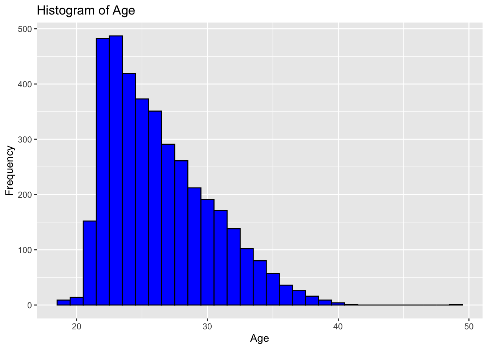
Once we have an initial histogram, we modify it using some of these strategies :
- We can change the binwidth to see how it affects the shape of the distribution.
- We can change the fill and color of the bars to make it more visually appealing.
- We can add labels and a title to make it easier to understand what the plot is showing.
Here is another example of a histogram :
ggplot(wnba_data, aes(x = Age)) +
geom_histogram(binwidth = 2, fill = "orange", color = "black") +
labs(title = "Histogram of Age for WNBA Players over the Years", x = "Age", y = "Frequency")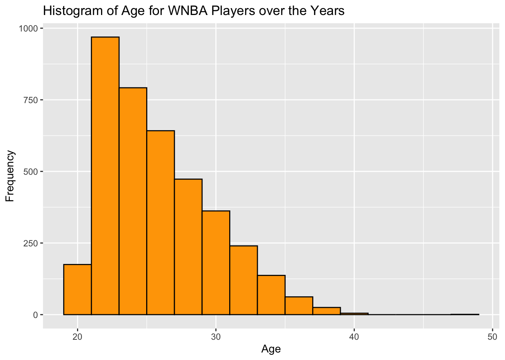
Barplot
Barplots are very similar to histograms. The main difference is that barplots are used for categorical data, while histograms are used for continuous data. We can create a barplot of the number of players by each position (Pos) they play:
# Create a barplot of the number of players in each age group using ggplot2
ggplot(wnba_data, aes(x = Pos)) +
geom_bar(fill = "green", color = "black") +
labs(title = "Barplot of Position", x = "Pos", y = "Count")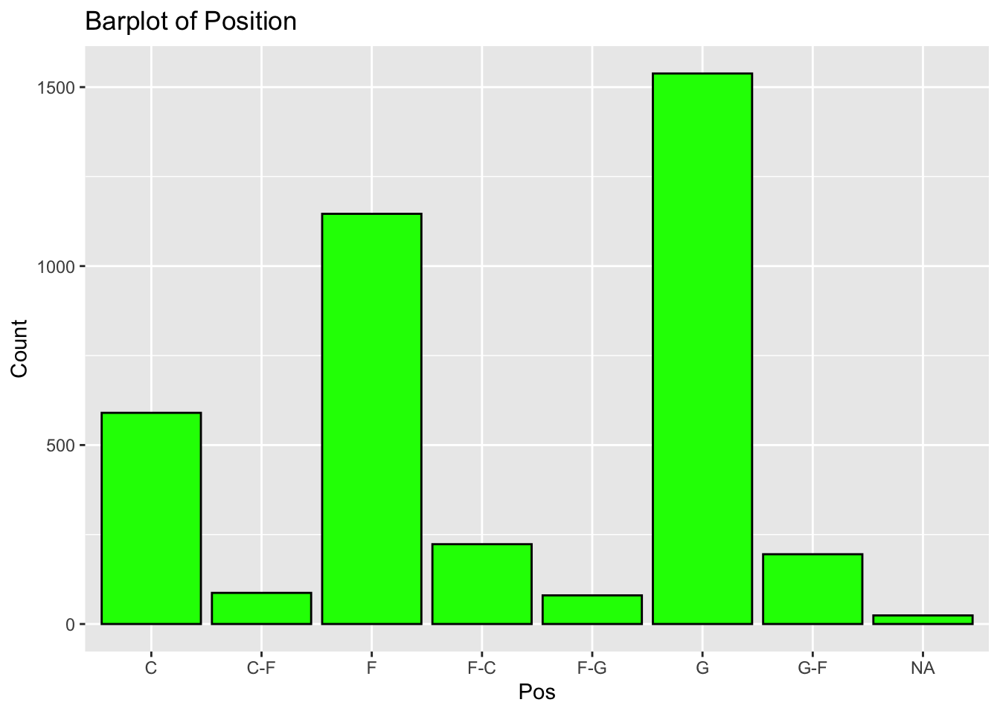
We can customize the barplot in the same way we customized the histogram. We can change the fill and color of the bars, add labels and a title, and so on.
We could also add the amounts to the bars using the geom_text() command like this:
ggplot(wnba_data, aes(x = Pos)) +
geom_bar(fill = "green", color = "black") +
geom_text(stat = "count", aes(label = after_stat(count)), vjust = -0.5) +
labs(title = "Barplot of Position with Counts", x = "Pos", y = "Count")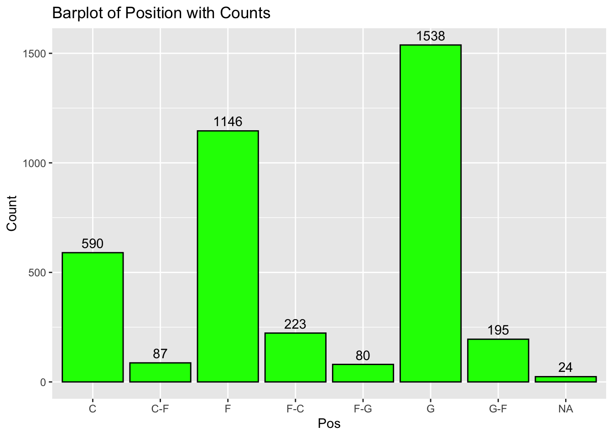
Boxplot
A boxplot is a graphical representation of the 5-number summary. It shows the minimum, first quartile, median, third quartile, and maximum values of the data. We can create a boxplot of the age variable like this:
ggplot(wnba_data, aes(y = Age)) +
geom_boxplot(fill = "purple", color = "black") +
labs(title = "Boxplot of Age", y = "Age")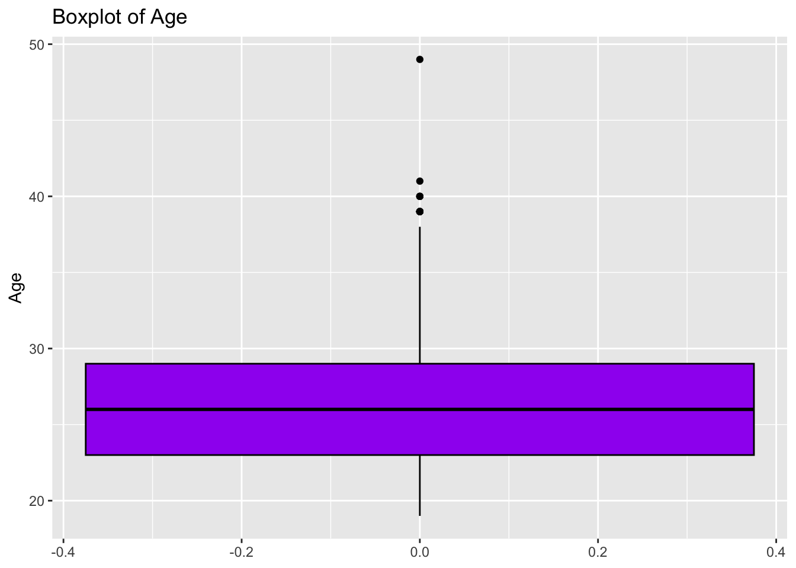
This can be customized by
- changing the color of the box
- adding labels and a title
- changing the color of outliers
- adding a jitter strip to show the individual data points
- flip the boxplot to make it horizontal
- change the alpha of the jitter points to make them more transparent
Here is an example of a customized boxplot :
ggplot(wnba_data, aes(x = "",y = Age)) +
geom_boxplot(fill = "purple", color = "black", outlier.color = "red") +
geom_jitter(width = 0.2, alpha = 0.5) +
labs(title = "Boxplot of Age with Jitter", x = "", y = "Age") +
coord_flip()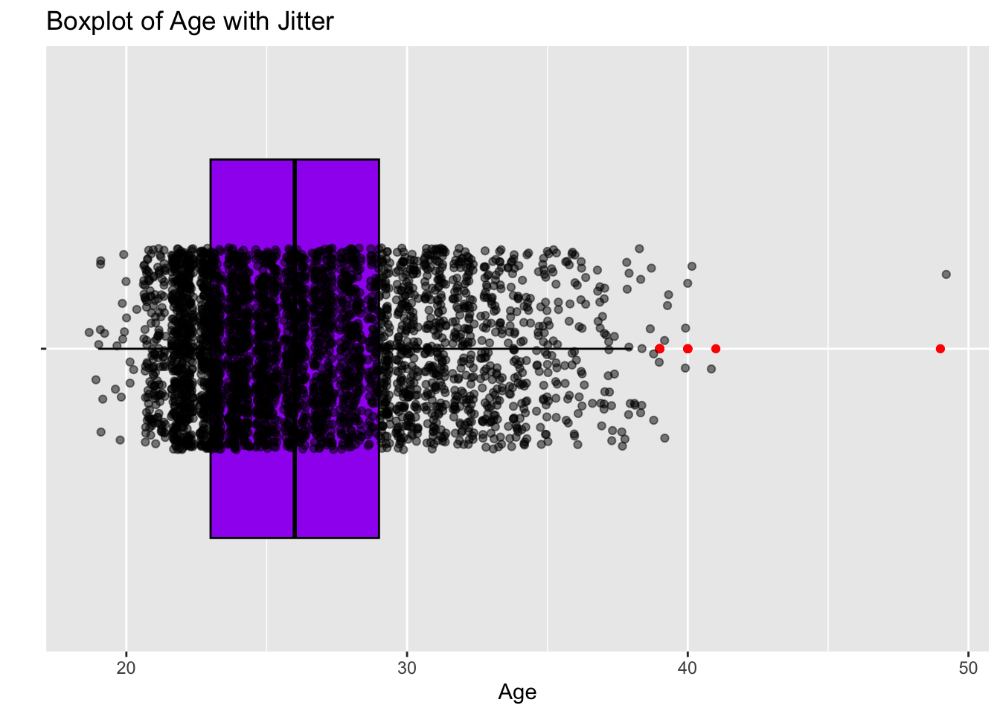
Notice that the coord_flip() command is used to flip the boxplot to make it horizontal.
We could have also achieved this by switching the x and y aesthetics like this:
ggplot(wnba_data, aes(x = Age, y = "")) +
geom_boxplot(fill = "purple", color = "black", outlier.color = "red") +
geom_jitter(height = 0.2, alpha = 0.5) +
labs(title = "Boxplot of Age with Jitter", x = "Age", y = "")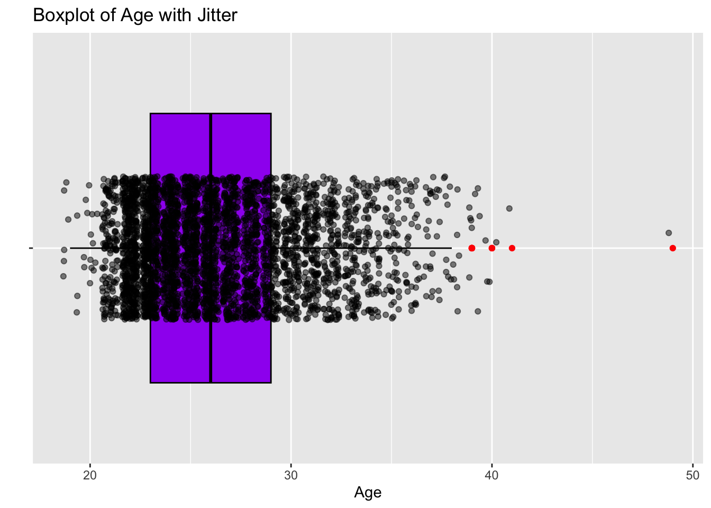
We could also break Age up by the different teams. This would lead to a boxplot of age by team. We can do this by changing the x aesthetic to Team (Tm) like this:
ggplot(wnba_data, aes(x = Tm, y = Age)) +
geom_boxplot(fill = "purple", color = "black", outlier.color = "red") +
geom_jitter(width = 0.2, alpha = 0.5) +
labs(title = "Boxplot of Age by Team with Jitter", x = "Team", y = "Age") +
theme(axis.text.x = element_text(angle = 90, vjust = 0.5, hjust=1))
This is a tad confusing since there are so many teams. Let’s just compare the Los Angeles Sparks (LAA) and the Minnesota Lynx (MIN) like this:
ggplot(wnba_data %>% filter(Tm %in% c("LAS", "MIN")), aes(x = Tm, y = Age)) +
geom_boxplot(fill = "purple", color = "black", outlier.color = "red") +
geom_jitter(width = 0.2, alpha = 0.5) +
labs(title = "Boxplot of Age by Team with Jitter", x = "Team", y = "Age")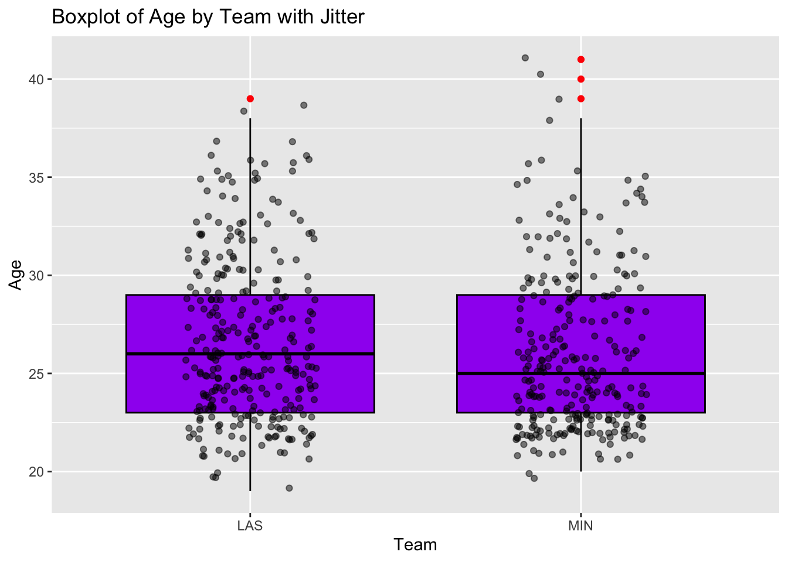
Let’s have some fun and customize the charts to match the colors of the teams. The Sparks use purple (#702F8A) and gold (#FFC72C) while the Lynx use navy (#0C2340) and aurora green (#78BE20).
# Make the LAS boxplot be filled with purple and the jitter strip be
# filled with gold. Make the MIN boxplot be filled with navy and the
# jitter strip be filled with aurora green.
ggplot(wnba_data %>% filter(Tm %in% c("LAS", "MIN")), aes(x = Tm, y = Age)) +
geom_boxplot(aes(fill = Tm), color = "black", outlier.color = "red") +
geom_jitter(aes(color = Tm), width = 0.2, alpha = 0.5) +
scale_fill_manual(values = c("LAS" = "#702F8A", "MIN" = "#0C2340")) +
scale_color_manual(values = c("LAS" = "#FFC72C", "MIN" = "#78BE20")) +
labs(title = "Boxplot of Age by Team with Jitter", x = "Team", y = "Age") +
theme(legend.position = "none")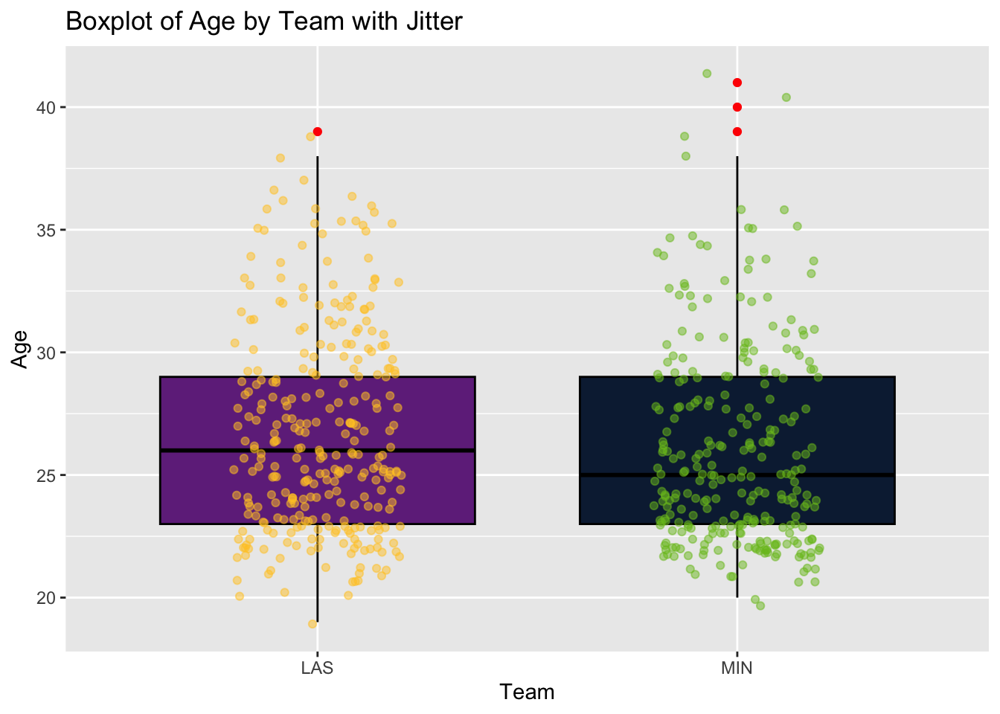
Scatterplot
Finally, we can create a scatterplot to show the relationship between two quantitative variables. For example, we can create a scatterplot of age and minutes played (MP) like this:
ggplot(wnba_data, aes(x = Age, y = MP)) +
geom_point(color = "blue", alpha = 0.5) +
labs(title = "Scatterplot of Age vs Minutes Played", x = "Age", y = "Minutes Played")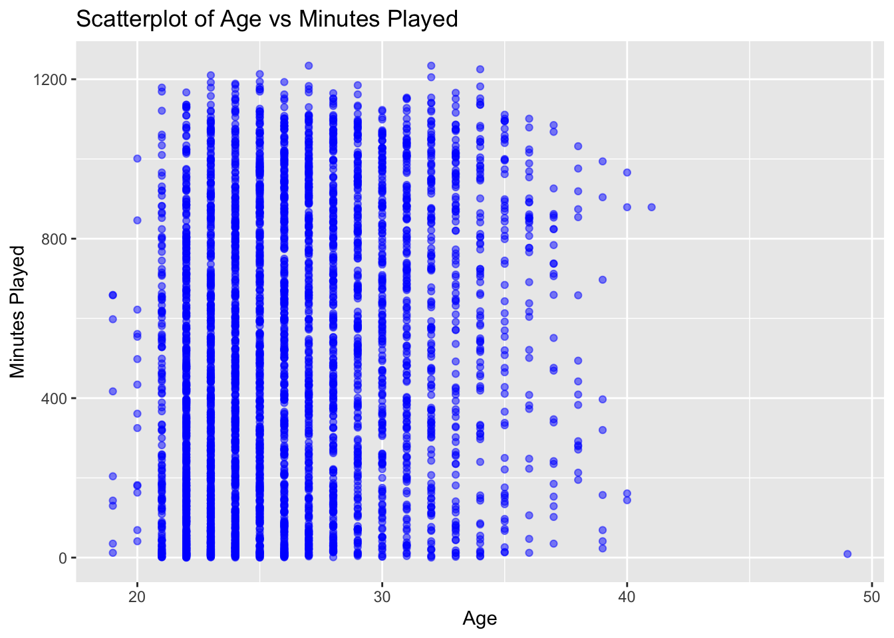
This looks like a bunch of columns because the Age variable is discrete.
We could also compare minute played (MP) to wins genreated (Wins_Generated) like this:
ggplot(wnba_data, aes(x = MP, y = Wins_Generated)) +
geom_point(color = "red", alpha = 0.5) +
labs(title = "Scatterplot of Minutes Played vs Wins Generated", x = "Minutes Played", y = "Wins Generated")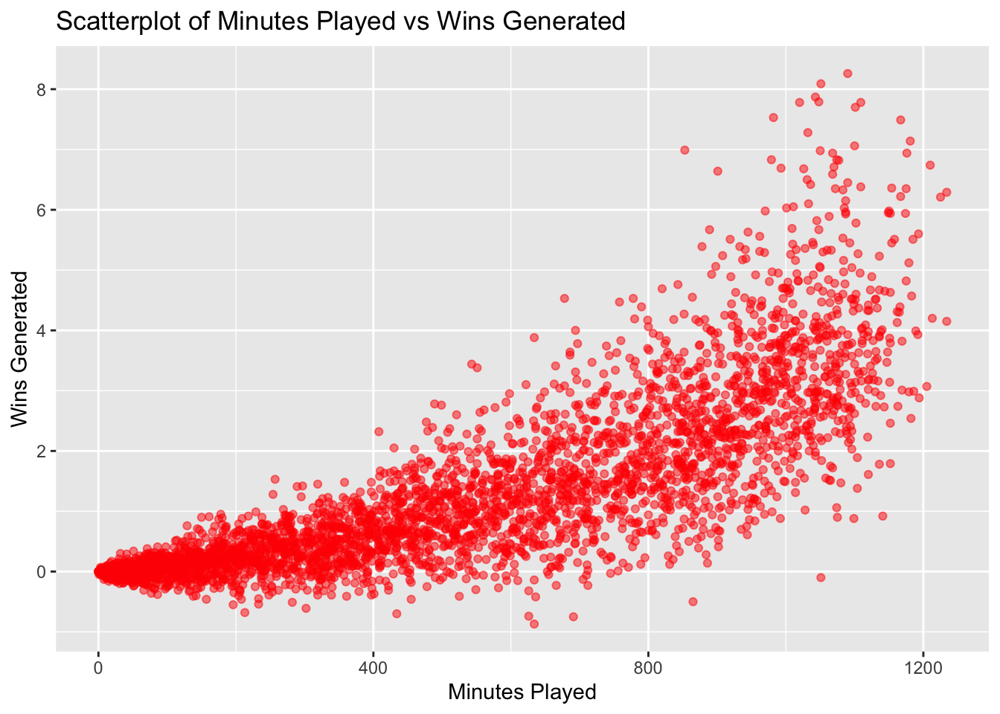
Practice Problems
Mean, Median Practice
- Using the WNBA dataset, calculate the mean and median of the Offensive Rebound Percentage (ORB_pct) variable. What does it mean if the mean and median have different values?
Hint
Think this through one step at a time.
- Did you get an
NAvalue when you tried to calculate the mean and median? If so, why do you think that is? - What argument can you add to the
mean()andmedian()commands to ignore the missing values and calculate the mean and median of the ORB_pct variable?
Solution
Solution
mean_orb_pct <- mean(wnba_data$ORB_pct, na.rm = TRUE)
median_orb_pct <- median(wnba_data$ORB_pct, na.rm = TRUE)
mean_orb_pct
median_orb_pct
5-Number summary and Outlier Practice
- Calculate the 5-Number summary of the Offensive Rebound Percentage (ORB_pct) variable. Are there any outliers in this variable? Use the 1.5*IQR rule to determine if there are any outliers.
Hint
- Use the
fivenumcommand to calculate the 5-number summary of the ORB_pct variable. - Use Q1 and Q3 to calculate the IQR (Interquartile Range) which is Q3 - Q1. These are in spots 2 and 4 from the
fivenumcommand. - Use Q1 and the IQR to calculate the lower bound which is Q1 - 1.5*IQR
- Use Q3 and the IQR to calculate the upper bound which is Q3 + 1.5*IQR
- Identify any values that are less than the lower bound or greater than the upper bound.
Solution
Solution
# Determine if there are any outliers in the ORB_pct variable.
Num_Summary <- fivenum(wnba_data$ORB_pct)
Num_Summary
IQR_ORB_pct <- Num_Summary[4] - Num_Summary[2]
IQR_ORB_pct
Lower_Bound <- Num_Summary[2] - 1.5*IQR_ORB_pct
Lower_Bound
Upper_Bound <- Num_Summary[4] + 1.5*IQR_ORB_pct
Upper_Bound
Outliers_ORB_pct <- wnba_data %>%
filter(ORB_pct < Lower_Bound | ORB_pct > Upper_Bound)
Outliers_ORB_pct
Variance and Standard Deviation Practice
- Calculate the variance and standard deviation of the Offensive Rebound Percentage (ORB_pct) variable. Interpret these values.
Hint
- What commands can you use to calculate the variance and standard deviation of the ORB_pct variable?
- What argument can you add to these commands to ignore the missing values and calculate the variance and standard deviation?
- Interpret the variance and standard deviation values that you calculated.
Solution
Solution
# Calculate the variance and standard deviation of the ORB_pct variable and save the results to variables called orb_pct_variance and orb_pct_sd
orb_pct_variance <- var(wnba_data$ORB_pct, na.rm = TRUE)
orb_pct_sd <- sd(wnba_data$ORB_pct, na.rm = TRUE)
Histogram Practice
- Create 2 histograms of the Offensive Rebound Percentage (ORB_pct) variable. Customize the histogram by changing the binwidth, fill color, and adding labels and a title to create the two visualizations.
Hint
- Think about the different layers you can add to a ggplot to customize it. You can change the binwidth, fill color, and add labels and a title to make it more visually appealing.
- OK, this isn’t much of a hint. Just try it out and see what you can come up with. You can always go back and modify it to make it better.
Solution
Solution
# Here is the first histogram :
wnba_data %>%
ggplot(aes(x = ORB_pct)) +
geom_histogram(binwidth = 1, fill = "blue", color = "black") +
labs(title = "Histogram of Offensive Rebound Percentage", x = "Offensive Rebound Percentage", y = "Frequency")
# Here is a second histogram with different customizations :
wnba_data %>%
ggplot(aes(x = ORB_pct)) +
geom_histogram(binwidth = 2, fill = "orange", color = "blue") +
labs(title = "Histogram of Offensive Rebound Percentage for WNBA Players over the Years", x = "Offensive Rebound Percentage", y = "Frequency")
Barplot Practice
- Create a Barplot of the number of players by year (year_ID). Customize the barplot by changing the fill color, adding labels and a title, and adding the counts to the bars.
Hint
- Start by creating a basic barplot of the number of players by year using ggplot2. The x-axis should be the year_ID variable and the y-axis should be the count of players.
- Customize the barplot by changing the fill color of the bars, adding labels to the axes, and adding a title to the plot.
- To add the counts to the bars, you can use the
geom_text()command with thestat = "count"argument to calculate the counts for each bar and display them on top of the bars. You can use theafter_stat(count)function to get the count values and use thevjustargument to adjust the vertical position of the text labels. - Add labels using the
labs()command to make it clearer what the plot is showing. You can add a title, x-axis label, and y-axis label to make it more informative. - Experiment with different customizations to make the barplot more visually appealing and informative. You can change the fill color, add a different title, or adjust the axis labels to make it clearer what the plot is showing.
Solution
Solution
# Create a Barplot of the number of players by year (year_ID). Customize the barplot by changing the fill color, adding labels and a title, and adding the counts to the bars.
wnba_data %>%
ggplot(aes(x = year_ID)) +
geom_bar(fill = "green", color = "black") +
geom_text(stat = "count", aes(label = after_stat(count)), vjust = -0.5) +
labs(title = "Barplot of Number of Players by Year", x = "Year", y = "Count")
Boxplot Practice
- Going back to the Offensive rebounding percentage, create a BoxPlot of the 5-Number Summary. Customize the boxplot by changing the color of the box, adding labels and a title, changing the color of outliers, adding a jitter strip to show the individual data points, flipping the boxplot to make it horizontal, and changing the alpha of the jitter points to make them more transparent.
Hint
- For the barplot, we want the y-axis to be ORB_pct and the x-axis to be a blank variable since we just want one boxplot for the whole dataset. We can create a blank variable by using
x = ""in the aesthetics of ggplot. - We can change the color of the box using the
fillargument in thegeom_boxplot()command. We can change the color of the outline of the box using thecolorargument in thegeom_boxplot()command. We can change the color of the outliers using theoutlier.colorargument in thegeom_boxplot()command. - We can add labels and a title using the
labs()command. - We can add a jitter strip to show the individual data points using the
geom_jitter()command. We can adjust the width of the jitter points using thewidthargument in thegeom_jitter()command. We can adjust the transparency of the jitter points using thealphaargument in thegeom_jitter()command. - We can flip the boxplot to make it horizontal using the
coord_flip()command
Solution
Solution
wnba_data %>%
ggplot(aes(x = "", y = ORB_pct)) +
geom_boxplot(fill = "purple", color = "black", outlier.color = "red") +
geom_jitter(width = 0.2, alpha = 0.5) +
labs(title = "Boxplot of Offensive Rebound Percentage with Jitter", x = "", y = "Offensive Rebound Percentage") +
coord_flip()
Scatterplot Practice
- Create a scatterplot that shows the relationship between assist percentage (AST_pct) and steal percentage (STL_pct). Customize the scatterplot by changing the color and transparency of the points, and adding labels and a title to the plot. Change the color of the points by the team (Tm) variable.
Hint
- Let the x-axis be the assist percentage (AST_pct) variable and the y-axis be the steal percentage (STL_pct) variable.
- Change the color of the points by the team (Tm) variable by using
color = Tmin the aesthetics of ggplot. - Adjust the transparency of the points using the
alphaargument in thegeom_pointcommand. - Add labels and a title to the plot using the
labs()command to make it more informative and easier to understand what the plot is showing. - Remove the legend since it will be too cluttered with all the different teams. You can do this by using
theme(legend.position = "none")in your ggplot code.
Solution
Solution
wnba_data %>%
ggplot(aes(x = AST_pct, y = STL_pct, color = Tm)) +
geom_point(alpha = 0.5) +
labs(title = "Scatterplot of Assist Percentage vs Steal Percentage", x = "Assist Percentage", y = "Steal Percentage") +
theme(legend.position = "none")